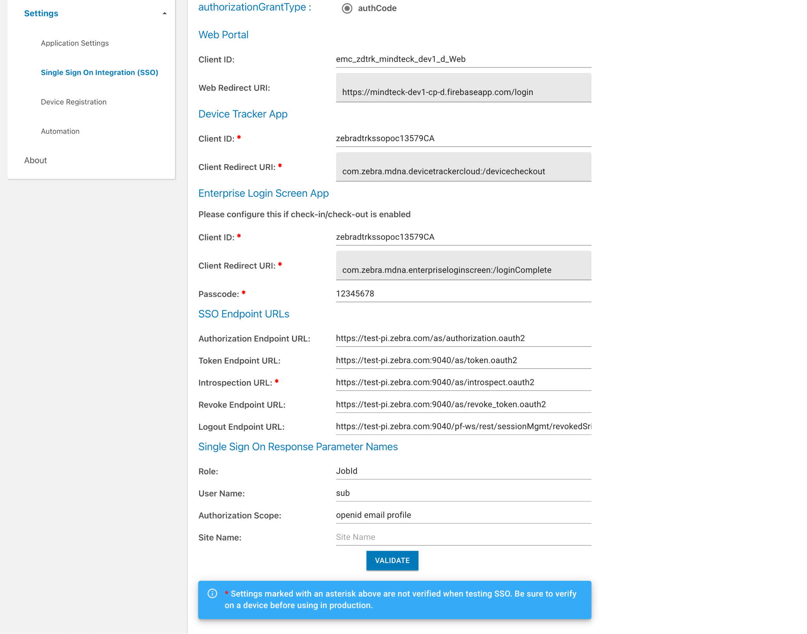
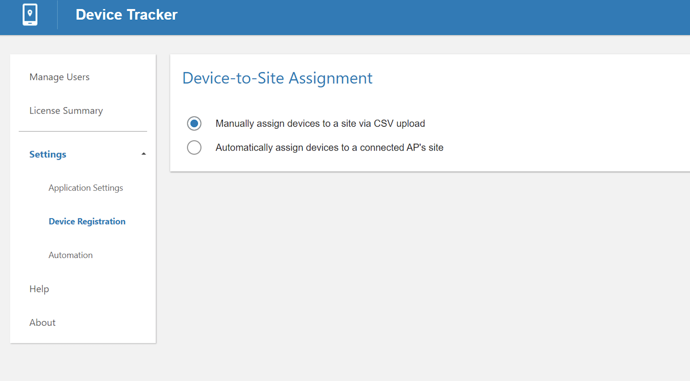
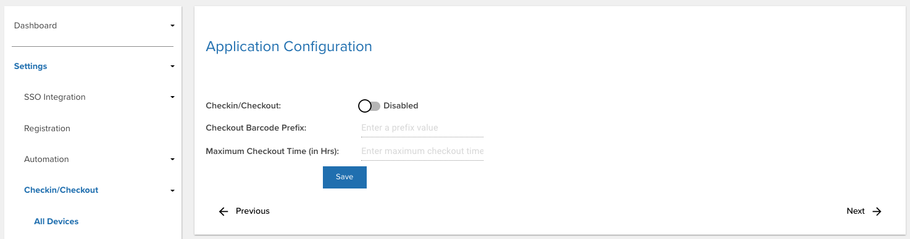
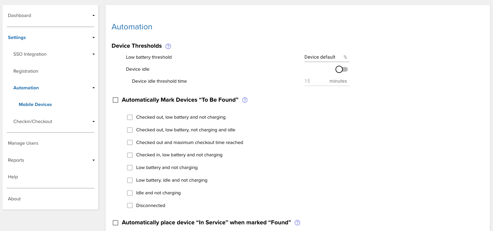
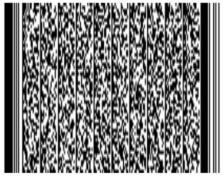

Overview
Administrators must register devices, access points and sites to aid in identifying and locating devices. This section discusses how to register the information and configure the solution, which could include automation.
There are 3 user roles: administrator, manager and associate. Functions and capabilities of the user varies based on their assigned role.
Note: Secondary Bluetooth Low Energy (BLE) configuration is part of the Install & Setup.
Administrator Role
Administrator functions and capabilties:
- Administrator login
- Web portal:
- Manage Users
- Configure Device Checkin/Checkout (optional)
- Set Barcode Prefix (optional)
- Monitor Licenses
- Import Devices
- Import Sites & APs
- Delete Devices
- Monitor devices at the corporate-level and site-level
- All Manager and Associate capabilities.
Manager Role
Manager functions and capabilities:
- Manager login
- Monitor devices at the site-level
- Mark a device for retrieval (To Be Found)
- Mark a device out of service (decommission) with a note (e.g. Wi-Fi issue or display broken)
- Clear a retrieval request
- Device or Site Search
- All Associate capabilities
Associate Role
Associate functions and capabilties:
- Device Checkout/Checkin
- View marked devices list (for retrieval)
- Find devices using the BLE proximity meter and audio chirp
- Mark devices as found or cannot be found
SSO Integration
Single sign-on (SSO) integration allows a user to use the same login across multiple software systems, including Device Tracker.
Site Name Configuration
To configure the Site Name parameter:
- Log in to the web portal as an administrator.
- In Settings, click on Single Sign On Integration.
- Under the section Single Sign On Response Parameter Names, enter the Site Name.  SSO Integration - Set site name
- Click on Validate.
Manage Users
Administrator and manager user accounts are created and managed through the web portal. Access the web portal by entering the URL provided by Zebra in a supported browser.

Device Tracker web portal
Add User
To add an admin or manager user account:
- Log in to the web portal as an administrator
- In the web portal, click Manage Users in the left menu.
- Select the role of the new user: Admin (access all sites) or Manager (access a single site).
- Enter the information prompted, including the email and password based on the following guidelines:
- Log in ID guidelines:
- Must be a valid email
- Maximum length: 255 characters
- Special characters allowed prior to '@':
! ~ # $ % ^ & * - _ + = {} | ' / ? - Characters allowed after '@':
. - - Spaces are not allowed
- '@' character is only allowed once
- '.' is only allowed in the middle of alphanumeric characters before and after '@'.
- Password guidelines:
- Minimum length: 6 characters
- Any combination of letters, numbers and symbols (ASCII-standard characters) are accepted.
- Log in ID guidelines:
- If the assigned role is a Manager, select a site to assign to the new user.
- Tap Add User.
- The new user is added to the All Users list.
Delete User
To delete an admin or manager user account (administrators only):
- Log in to the web portal as an administrator.
- From the web portal, tap Manage Users in the left menu.
- From the list of users, locate the user to delete and click on the delete icon next to the user.
- Click OK in the confirmation message.
Search for User
Admins or manager user accounts can be searched by email address. The entire email address must be entered. Action can be taken on the user from the search results.
To search for a user:
- Log in to the web portal as an administrator.
- From the web portal, tap Manager Users in the left menu.
- Enter the email address to search for in the search field located below the Add User button from the top right of the page. Press the enter key.
- The search results are displayed.
Reset Password
The password can be reset through the web portal or the client app if the administrator or manager forgot the password.
Steps to reset the password in the web portal:
- From the web portal login page, click Forgot your password.
- Enter your email address then click Reset Password.
- A message appears indicating a password reset email is sent.
- Open the email and click on the link.
- Enter in the new password based on the following guidelines:
- Minimum length: 6 characters
- Any combination of letters, numbers and symbols (ASCII-standard characters) are accepted.
- The password is reset with the new password.
Register Devices
Administrators register device information along with friendly names and site assignments to aid in identifying, tracking and locating devices. An alternative to manual site assignment is automatic assignment of a device to a site based on the AP it is connected to.
A sample device .CSV file is supplied by Zebra for the administrator to populate with the appropriate data. After making the modifications, copy the populated .CSV file to the mobile device for device data to be imported through the client app. Importing data either modifies or adds entries to the existing database, unless deleting a device. The data fields are:
| CSV File | Data | Description | Required |
|---|---|---|---|
| Device | ModelNumber | Device model | Yes |
| SerialNumber | Device serial number | Yes | |
| DeviceFriendlyName | Name used to identify device. Supported characters are alphanumeric. The following are supported special characters: _-@#$%&*!+.^()[]=?><:
|
Optional | |
| SiteName | Site name or location where the device is assigned, useful when finding a device. Alternatively, automatically assign sites based on the AP the device is connected to, see Device-to-Site Assignment. Supported characters are alphanumeric. The following are supported special characters: _-@%&*!+^()=?><:
|
Optional |
Sample Import Device .CSV file content:
ModelNumber,SerialNumber,DeviceFriendlyName,SiteName
TC51,17009522509812,Inventory1,Chicago
TC51,17009522509813,Inventory2,Los Angeles
When modifying the .CSV file, keep the header information intact and replace the sample data with the appropriate data desired. The .CSV file cannot be UTF-8 encoded, otherwise an error can occur; it must be saved in a normal comma separated values format.
The next version of Device Tracker will support registration of site assignments via .CSV file import within the web portal and will no longer be available in the client app.
Import Devices
Import device data to register the device information from the populated .CSV file. A maximum of 20,000 rcords can be imported at one time.
To import the device .CSV file to add/modify device data:
- Copy the populated .CSV file containing device data from the PC to the device root
\Internal shared storagefolder. - In the client app, log in as the admin. In the main screen, tap on the options menu at the top right and select Admin/Manager Login. Enter the Administrator credentials and tap Login.
- Tap the top right options menu and select Settings, which is now visible.
- Tap Import Access Points/Sites/Devices.
- Under the section Import Device CSV File, tap Browse File. Browse and select the appropriate .CSV file.
- Under the section Import Device CSV File, tap Upload CSV.
- The device data import is complete. Results are displayed in the Status section at the bottom of the screen.
New devices imported are initially in the Never Connected state until the Device Tracker app is installed on the devices, configured and communicating with the server.
Delete Devices
Deleting a device removes device data from the Device Tracker solution after uninstalling the client app. When a device is deleted, the license is deallocated and released to the license pool. A maximum of 5,000 records can be removed at one time.
Prerequisite: Prior to deleting a device, uninstall the Device Tracker application on the device.
To import the device .CSV file to delete a device:
- Copy the .CSV file containing the removed device record from the PC to the device root
\Internal shared storagefolder. - In the client app, log in as the admin. In the main screen, tap on the options menu at the top right and select Admin/Manager Login. Enter the Administrator credentials and tap Login.
- Tap the top right options menu and select Settings, which is now visible.
- Tap Import Access Points/Sites/Devices.
- Under the section Import Delete Device CSV File, tap Browse File. Browse and select the appropriate .CSV file.
- Under the section Import Delete Device CSV File, tap Upload CSV.
- The specified device data is removed from the system. Results are displayed in the Status section at the bottom of the screen.
Sample Delete Device .CSV file content:
ModelNumber,SerialNumber
TC51,17009522509812
TC51,17009522509813
When modifying the .CSV file, keep the header information intact and replace the sample data with the appropriate data desired. It is particularly important for the AP location friendly name to be easily understood for users to determine the location within the facility when finding a device. The .CSV file cannot be UTF-8 encoded, otherwise an error can occur; it must be saved in a normal comma separated values format.
Register Access Points & Sites
Similar to registering devices, administrators register site names and access points with friendly names to aid in identifying, tracking and locating devices. A sample AP file is supplied by Zebra for the administrator to populate with the appropriate data. Copy the populated .CSV file to the mobile device for the data to be imported through the client app. Importing data either modifies or adds entries to the existing database. The data fields are:
| CSV File | Data | Description | Required |
|---|---|---|---|
| AP | SiteName | Site name or location. Supported characters are alphanumeric. The following are supported special characters: _-@%&*!+^()=?:
|
Yes |
| BSSID | Access point MAC address | Yes | |
| AssetName | Name used by IT admin for drawings, labeling of hardware, etc. (For future use only – does not have any impact whether or not it is in use.) |
Optional | |
| LocationFriendlyName | Access point location friendly name, useful to identify general device location. Supported characters are alphanumeric. The following are supported special characters:: ><:_-@#$%&*!+.^()[]=?
|
Yes |
Sample Import AP .CSV file content:
SiteName,BSSID,AssetName,LocationFriendlyName
New York,14:a7:2b:24:cc:a5,,First Floor Reception Area
When modifying the .CSV file, keep the header information intact and replace the sample data with the appropriate data desired. It is particularly important for the AP location friendly name to be easily understood for users to determine the location within the facility when finding a device. The .CSV file cannot be UTF-8 encoded, otherwise an error can occur; it must be saved in a normal comma separated values format.
The next version of Device Tracker will support registration of site assignments via .CSV file import within the web portal and will no longer be available in the client app.
Import Site and AP Data
Import site and AP data to register the information with the server. When adding or modifying site and AP data, it is important for the AP friendly name to be easily understood by users to aid in finding the location where the device is connected. A maximum of 20,000 records can be imported at one time.
To import site/AP data:
- Copy the populated .CSV file containing site and AP data from the PC to the device root
\Internal shared storagefolder. - In the client app, log in as the admin. In the main screen, tap on the options menu at the top right and select Admin/Manager Login. Enter the Administrator credentials and tap Login.
- Tap the top right options menu and select Settings, which is now visible.
- Tap Import Access Points/Sites/Devices.
- Under the section Import Access Point CSV File, tap Browse File. Browse and select the appropriate .CSV file.
- Under the section Import Access Point CSV File, tap Upload CSV.
- The AP data import is complete. Results are displayed in the Status section at the bottom of the screen.
Device-to-Site Assignment
Devices can be assigned to sites either manually, based on the CSV file upload, or automatically, based on the AP the device is connected to.
To select the method of device registration:
- Log in to the web portal as an administrator.
- Click on Settings.
- Under Settings, click on Device Registration. 
- Select the desired device registration method:
a. Manually assign devices to a site via CSV upload (default)
Manually assign sites to devices by uploading a CSV file that includes the site name for the device to be assigned, see Import Devices.
b. Automatically assign devices to a Connected AP's site
Prerequisite: Register the site to an AP.
When the device connects to an AP, the device is automatically assigned a site name based on the AP it is connected to, provided the AP is registered with a site. If there is no site assigned to the AP, then no site name is assigned to the device and the device is listed under Unassigned Devices in the site list. - Click Save.
Note: If the option to automatically assign devices is enabled, it overwrites the sites that are manually assigned via CSV file upload and any further CSV uploads cannot take into effect.
Checkin/Checkout Device
Device Checkin/Checkout is an optional feature that displays an overlay on top of the screen to enforce the user to scan their unique barcode, maintaining user accountability of the device. When enabled, users cannot access the device until they scan their user barcode in the device checkout screen. By default, all barcodes are accepted if no barcode prefix is defined. Specify a checkout barcode prefix to restrict checkout to only barcodes that begin with the specified prefix.
Checkin/Checkout scenarios:
- Checkout: At the start of a work shift, the user checks-out the device by scanning their unique barcode. This associates the user with the device, which is visible in the device information.
- Checkin: At the end of a work shift, the user checks-in the device depending on the Device Checkin Option selected. After checkin, the user is no longer associated with the device.
Note: If any other app also uses a screen overlay, the checkin/checkout feature may conflict with the other app. For example, this feature cannot be used with Zebra’s MotionWorks Proximity application.
Enable Checkin/Checkout
To enable device checkout, access the web portal by entering the URL provided by Zebra in a supported browser.
- Log in to the web portal as an administrator.
- Click on Settings in the left menu.
- Under Settings, click on Application Settings.
- Enable Checkin/Checkout. When enabled, checked-out devices appear in the dashboard monitored by administrators and managers. Checkin/Checkout options are displayed and described in the sections that follow.

Configure Checkout/Checkin
Note: For Android 10 and higher, if "Display over other apps" permission is not granted, the user needs to manually launch the app once and grant "Display over other apps" permission for checkout functionality to work.
Checkout Barcode Prefix
(Optional) Specify a barcode prefix to restrict checkout to only scan barcodes that begin with the specified prefix in the form of a character string. If the barcode scanned does not contain the prefix, checkout is not successful. Checkin/Checkout must be enabled. Keep this field blank to accept all barcodes without a prefix.
When generating a barcode with the prefix, the specified prefix is followed by the username identifier. The following is a sample barcode containing prefix “NGDTRK-” and username “JohnDoe”: Sample barcode with prefix and username: "NGDTRK-JohnDoe"
Max Checkout Time
(Optional) Enter the maximum time (in hours) for the device to be checked out when Checkin/Checkout is enabled. When the specified time elapses, the device is automatically checked back in. Max Checkout Time is affected by the following options:
- Automatically Mark Devices For Retrieval, if Maximum Checkout Time is selected.
- On the dashboard, the user of the checked out device is flagged if the device is not returned before the Maximum Checkout Time is reached.
Device Checkin Options
Select one or more of the Device Checkin Options to specify the action that triggers a device checkin after a device is checked out:
- Manual - the user navigates to the options menu (top right) from the main screen of Device Tracker and selects Check-In Device.
- Cradle - the user places the device on a powered cradle to checkin the device.
- Reboot - the user reboots the device to checkin.
After device checkin from any of the above methods, the checkout screen appears prompting the user to scan a barcode to gain device access. By default, all 3 options are selected.
Automation
Device Tracker can be configured to automatically change device states when specific conditions are met or certain thresholds are reached. For example, devices can be automatically marked "To Be Found" if they are checked out, low in battery, and not charging. This proactively allows the device to be located prior to completely losing battery power and while potentially actively in use, preventing the need for an administrator to continually monitor devices and manually mark the devices.
The device must be connected to the Device Tracker server to receive automation settings. Changes to automation settings on the server cannot be applied to disconnected devices.
Configure Automation Settings
To enable automation, set the related device thresholds and configuration:
Log in to the web portal as an administrator.
Click on Settings.
In Settings, click on Automation. 
Set the Device Thresholds:
- Low battery threshold - Specify the percentage (%) of battery capacity when the device reaches the Low Battery condition. If no value is specified, it defaults to the device’s low battery threshold.
- Device idle - Enable this option to track a device when it is stationary, or it has not physically moved. Specify the amount of time (in minutes) for the device to remain stationary before it is considered Idle. Default value: 15; minimum value: 5; maximum value: 10000.
- Maximum checkout time - Set the maximum checkout time (in hours) before the device is automatically checked in. See Max Checkout Time.
Automatically mark devices for retrieval - Enable this option and select the state(s) or combination of states for the device to be automatically marked "To be Found" when the selected state(s) is reached, rather than performing this manually. If a combination of states is selected, all conditions must be met for the device to be automatically marked "To Be Found." If the selected state(s) is not reached, the device remains off the "To Be Found" list. Available states and combination of states:
- Checked out, low battery and not charging
- Checked out, low battery, not charging and idle
- Checked out and maximum checkout time reached
- Checked in, low battery and not charging
- Low battery and not charging
- Low battery, idle and not charging
- Idle and not charging
- Disconnected
If a combination of states is selected, all conditions must be met for the device to automatically be marked "To Be Found." After a device has been automatically marked "To Be Found" based on the above selection, if the device state changes and no longer satisfies the selected state(s), then "To Be Found" is removed from the device.
Automatically clear found device's state - Enable this option to automatically place the device back “In Service” after it is located and marked “Found”. This eliminates the need to manually perform this action.
Click on Save.
Diagnostics
For diagnostic purposes, logging can be enabled in Device Tracker to capture application and system information to Android logcat. RxLogger is a built-in tool on Zebra Android devices that collects data and event logs from logcat and stores them in a single location. If issues are encountered, a Zebra representative may request for the log files to be collected and supplied.
Using StageNow
To use StageNow to capture logging:
Open StageNow on the device.
Scan the barcode to enable Device Tracker logging and start RxLogger log capture: 
Reproduce the issue.
Scan the barcode to disable Device Tracker logging and stop RxLogger log capture:

Logs are located in the RxLogger folder (default location: /sdcard/RxLogger).
Using EMM
To use EMM to capture logging, refer to the following XML content:
To enable logging:
<wap-provisioningdoc> <characteristic version="1.0" type="com.zebra.mdna.devicetrackercloud"> <parm name="EnableLog" value="1" /> </characteristic> </wap-provisioningdoc>To disable logging:
<wap-provisioningdoc> <characteristic version="1.0" type="com.zebra.mdna.devicetrackercloud"> <parm name="EnableLog" value="0" /> </characteristic> </wap-provisioningdoc>
Send the desired XML content to the EMM using either OEMConfig or MX to configure the app.